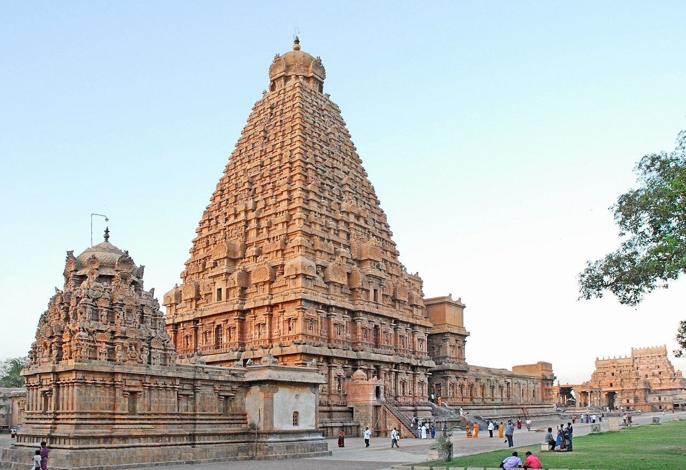

| A pilgrimage to the Holy Shrine of Shri Mata Vaishno Devi Ji is considered to be one of the holiest pilgrimages of our times. Popular the world over as Moonh Maangi Muradein Poori Karne Wali Mata, which means, the Mother who fulfills whatever Her children wish for, Shri Mata Vaishno Devi Ji resides in a Holy Cave located in the folds of the three peaked mountain named Trikuta (pronounced as Trikoot). The Holy Cave attracts millions of devotees every year. In fact, the number of Yatris visiting the Holy Shrine annually now exceeds one crore. This is due to the unflinching faith of the devotees who throng the Shrine from all parts of India and abroad. The Holy Cave of the Mother is situated at an altitude of 5200 ft. The Yatris have to undertake a trek of nearly 12 km from the base camp at Katra. At the culmination of their pilgrimage, the yatries are blessed with the Darshans of the Mother Goddess inside the Sanctum Sanctorum- the Holy Cave. These Darshans are in the shape of three natural rock formations called the Pindies. There are no statues or idols inside the Cave. Darshans are open round the clock throughout the year. Since the year 1986, when the Shri Mata Vaishno Devi Shrine Board (commonly called Shrine Board) was formed, the management of the Shrine and regulation of the Yatra has been vested in the Board. The Board has undertaken a number of developmental activities aimed at making the Yatra a comfortable and satisfying experience for the Yatris. The Board continues to reinvest the offerings and donations received in carying out improvements in various kinds of Yatri facilities. |  |